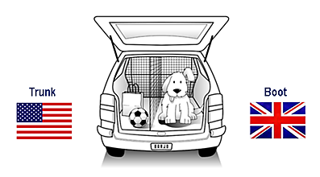
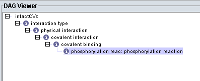
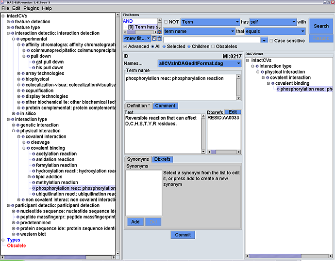

|
When annotating molecular interactions it is vital that the same vocabulary is used throughout otherwise data mining (searches) would be incomplete and thus a bad representation of the data held in the database. For example, if database curators entered the experiment method, yeast-2-hybrid, differently (e.g. Y2H, yeast_2_hybrid, yeast two hybrid, etc) any search using only one of those terms would only find a portion of the data. A controlled vocabulary stipulates a default term to be used such that all curators use the term “yeast two hybrid” consistently throughout the database, and the user is made aware of this. Then a search using this term will retrieve 100% of the required data.

The controlled vocabularies take the form of a tree/hierarchical structure. The picture below shows how the annotation gets more specific further down the tree.

In graph theory, a genre of Mathematics, such structures are called directed acyclic graphs (DAG) as the hierarchy is one-way and thus no cycles are formed. One of the rules of DAGs is that all parent terms of a term are also correct. This is called the True Path Rule. IntAct annotates molecular interactions with as much detail as possible to ensure maximum benefit to researchers.
The controlled vocaulary used by IntAct can be viewed
here.

To view the IntAct controlled vocabularies and see their hierarchical structure, it is recommended that you download the free program DAG-Edit, and import the IntAct CVs by downloading the two files shown at the bottom of the screen above ("allCVsInDAGEditFormat") to get something like the picture below.

|